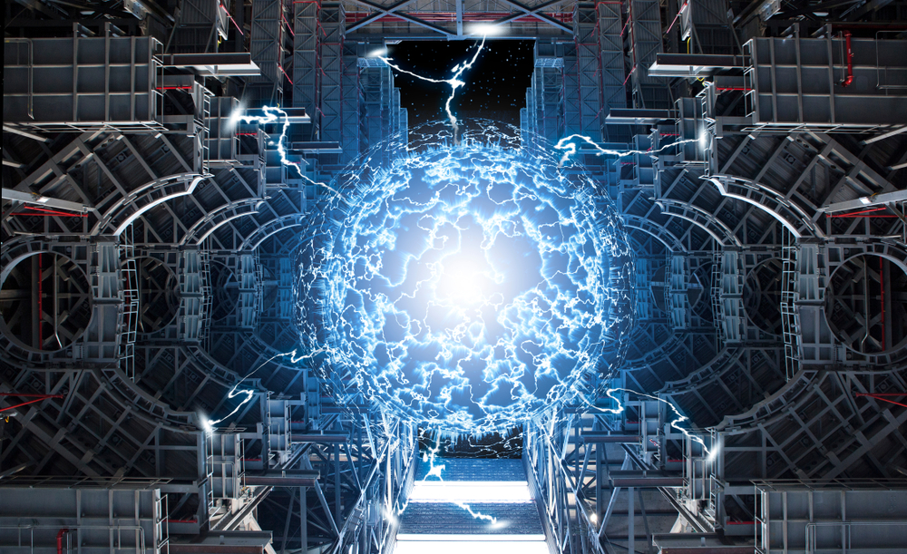

Если все пойдет по плану, США к 2035 году ликвидируют все выбросы парниковых газов в своем секторе электроэнергетики. В этой амбициозной цели правительство, в основном, полагается на резкое увеличение производства энергии ветра и солнца. Вскоре этот план может получить поддержку и ядерного синтеза — мощной технологии, которая до недавнего времени казалась недосягаемой. Рассказываем, что это такое и помогут ли ядерные технологии климату.
Ядерный синтез (в данном случае речь о термоядерном синтезе) это реакция слияния легких атомных ядер в более тяжелые, происходящая при сверхвысокой температуре и сопровождающаяся выделением огромных количеств энергии. Такая реакция обратна делению атомов: в последней энергия выделяется за счет расщепления тяжелых ядер на более легкие.
Согласно современным астрофизическим представлениям, основным источником энергии Солнца и других звезд является происходящий в их недрах термоядерный синтез. В земных условиях он осуществляется при взрыве водородной бомбы. Термоядерный синтез сопровождается колоссальным энерговыделением на единицу массы реагирующих веществ (примерно в 10 миллионов раз большим, чем в химических реакциях). Поэтому представляет большой интерес овладеть этим процессом и на его основе создать дешевый и экологически чистый источник энергии. Однако несмотря на то, что исследованиями управляемого термоядерного синтеза (УТС) заняты большие научно-технические коллективы во многих развитых странах, предстоит решить еще немало сложных проблем, прежде чем промышленное производство термоядерной энергии станет реальностью.
Современные атомные станции, использующие процесс деления, лишь отчасти удовлетворяют мировые потребности в электроэнергии. Топливом для них служат естественные радиоактивные элементы уран и торий, распространенность и запасы которых в природе весьма ограничены; поэтому для многих стран возникает проблема их импорта. Главным компонентом термоядерного топлива является изотоп водорода дейтерий, который содержится в морской воде. Запасы его общедоступны и очень велики (мировой океан покрывает ~71% площади поверхности Земли, а на долю дейтерия приходится ок. 0,016% общего числа атомов водорода, входящих в состав воды).
Помимо доступности топлива, термоядерные источники энергии имеют следующие важные преимущества перед атомными станциями:
Успешное осуществление реакции синтеза зависит от свойств используемых атомных ядер и возможности получения плотной высокотемпературной плазмы, которая необходима для инициирования реакции.
Энерговыделение при ядерном синтезе обусловлено действующими внутри ядра чрезвычайно интенсивными силами притяжения; эти силы удерживают вместе входящие в состав ядра протоны и нейтроны. Они очень интенсивны и чрезвычайно быстро ослабевают с увеличением расстояния. Помимо этих сил, положительно заряженные протоны создают электростатические силы отталкивания. Радиус действия электростатических сил гораздо больше, чем у ядерных, поэтому они начинают преобладать, когда ядра удалены друг от друга.
В нормальных условиях кинетическая энергия ядер легких атомов слишком мала для того, чтобы, преодолев электростатическое отталкивание, они могли сблизиться и вступить в ядерную реакцию. Однако отталкивание можно преодолеть «грубой» силой, например сталкивая ядра, обладающие высокой относительной скоростью.